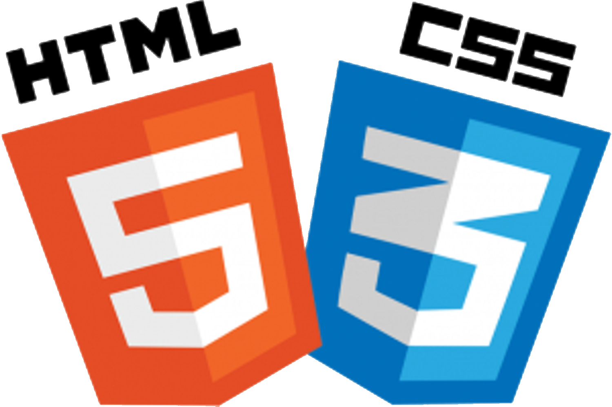

Project#3 HTML&CSS
Bij dit project ga ik vertellen over hoe dat ik mijn website heb gemaakt. Dit was een heel proces gespreid over vele weken. Over het algemeem ging dit altijd vrij goed, en als ik vastzat kon ik altijd op hulp rekenen. Ik vind het zeer leuk om websites te maken aangezien je hier echt mag doen wat je wilt en je creative kant is kan laten zien.


Technical description
- Programma Sublime
- Veel opzoekwerk op fora
- Veel troubleshooting van code
- Veel testen wat wel of niet werkt van opmaak
- Heel veel de site www.w3schools.com gebruiken
Het project zelf
Ik ben nog niet helemaal klaar met mijn website maar ik ben momenteel al heel tevreden met het resultaat. Ik heb het vaak moeilijk met het design. Ik vind dit wel zeer leuk om te doen omdat ik later graag sites zou maken voor bedrijfen of particulieren.